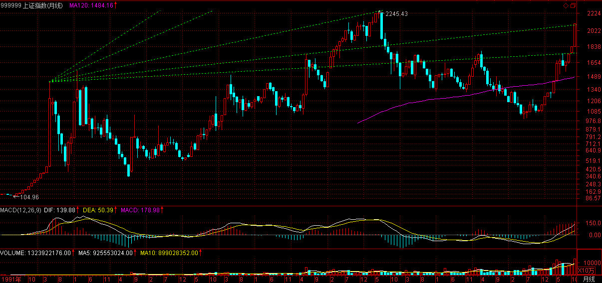

(2006-11-29 12:00:00)
甄别“早泄”男，必须要选择三个独立的系统。其中一个最常用的，就是所谓的技术派玩意。
单纯的技术派是不行的，单纯的非技术派也是不行的。【韶山映山红】价值投资只是指明方向，用于选股，需要技术派的方法进行实盘操作。】
技术派的玩意，必须也只能在三个独立系统里，才会有大的功效。【韶山映山红】必须，也只能。单纯的技术派只管埋头拉车是不行的，还要学会抬头看路。】
技术分析，最核心的思想就是分类，这是几乎所有玩技术的人都搞不清楚的一点。【韶山映山红】技术分析，最核心的思想就是分类。也只能拿来分类。分类的结果，就是操作的依据，分类发生了变化，配套的应对也要跟上。】
技术指标发出买入信号，对于技术派来说，就以为是上帝给了暗示一般，抱着如此识见，几乎所有技术派都很难有大的成功。【韶山映山红】以为“输入与输出间被某种必然的逻辑关系和因果链条所连接”。复习《教你炒股票08：投资如选面首，G点为中心，拒绝ED男！》】
技术指标不过是把市场所有可能的走势进行一个完全的分类，为什么技术派事后都是高手，真正干起来就个个阳痿，就是这个原因。【韶山映山红】所有可能的走势，完全分类。缠论的技术派一样的也要注意复盘大神的问题。】
技术分析可说的东西太多了，这指标那指标，如何应用，关键就是上面所说的分类问题。【韶山映山红】指标没有过错，如何应用是关键。拿来分类，能完全分类，就可以用。】
任何技术指标，只是把市场进行完全分类后指出在这个技术指标的视角下，什么是能搞的，什么是不能搞的，如此而已。【韶山映山红】技术指标只是根据过去对当下的走势做一个完全的分类，区分当下“什么是能搞的，什么是不能搞的”，并不能对未来做任何预判。未来的成功率源自于不靠谱的惯性运动。正是这个走势的惯性造就了那些指标的神话。】
至于这个指标对应的情况是否百分百反映在实际的走势上，这个问题的答案肯定是否定的，否则所有的人都可以按照这指标操作，哪里还有亏钱的人？【韶山映山红】任何指标，期盼的未来走势，都是靠不住的。】
然而，只要站在纯粹分类的角度考察技术指标，那么，技术指标就会发挥他最大的威力。【韶山映山红】技术指标是对当下走势状态的分类，把不能搞的筛出去，这就是他最大的威力。】
最简单又最实用的技术指标系统就是所谓的均线系统。【韶山映山红】最简单，最多人参考，所以受众最多，利用和被利用，然后就有了自我实现效应，然后就成了最实用的技术指标系统。】
均线系统显然不是一个太精确的系统，太多的骗线。【韶山映山红】均线系统都是以收盘线作为分析对象，把其中的过程信息都丢失了，所以不是一个太精确的系统，以收盘的一个点位代表某Ｋ线的全部信息，也容易制造假象。利用和被利用的博弈，也容易被拿来挖坑，太多的骗线。】
如果你按照突破某条均线就买入操作，反之卖出，那你的成功率绝对不会高，特别当这条均线是短期的。【韶山映山红】成功率绝对不会高，但最终的盈亏不能一概而论，需要具体分析。这样使用均线系统可以抓住大涨、逃避大跌，但遇到震荡市就会被反复收割。对Ａ股的股票来说，如果真的能严守操作纪律，MA20左右的均线做这样的操作，获利是大概率事件。最主要的问题不是震荡市造成的损失，而是这种操作违背人性，几乎没有人真的能够严守操作纪律。】
真正有用的是均线系统，也就是由若干条代表短、中、长期走势的均线构成的技术评价系统。【韶山映山红】后面课程里，缠师说：“均线系统的设置，一定要根据实际的走势来，也就是你设置的均线系统，一定要和实际已有走势相吻合。例如，从6124点下来，我们选择5、13、21、34、55、89、144、233参数构成均线系统，各位可以看看，该系统就完全和走势极端吻合。”】
注意，任何技术指标、系统，本质上都是一个评价系统，也就是告诉你在这个系统的标准下，评价对象的强弱。【韶山映山红】是一个评价系统，而不是预测系统。要记住这个本质。缠论技术里广泛使用的MACD也一样。】
例如，一条5日均线，站在上面，代表着用5日均线对市场所有情况进行分类，目前站在5日均线上这种情况意味着是强势。【韶山映山红】相对MA5的强势而已，甚至，在这5天里面都不一定是最强势的。】然而，站在5日均线上的同时，可能对于10日均线是在其下，那对于10日均线的系统评价，这种情况就是弱势了，那究竟相应的走势是强还是弱？【韶山映山红】相对MA10的弱势而已，甚至，在这10天里面都不一定是最弱势的。★是走势追均线，还是均线追走势，这个主动被动之分，可以做个专题，以后研究。】
【韶山映山红】技术指标是一种客观的数学运算。是人根据实际情况去选择指标，而不是把命运交给指标去操控。】
其实，强弱都是相对的，关键是你操作所介入的标准。对于超超短线来说，在1分钟钱上显示强势就可以介入了，特别在有T+0的情况下，这种操作是很正常的。但对于大资金来说，就算日线上的5日强势也不足以让他们感兴趣。【韶山映山红】强弱也是有级别的。】
任何技术指标系统的应用，首要的选择标准都和应用的资金量和操作时间有关，脱离了这个，任何继续的讨论都没有意义。【韶山映山红】★幅度，持续时间，交易量，是个三维坐标，可以做个专题，以后研究。】
因此，每个人都应该按照自己的实际情况来考虑如何去选择相应的参数，只要明白了其中的道理，其应用完全在于一心了。【韶山映山红】具体到缠论的技术系统，就是操作级别的选择和仓位控制。】
均线系统，必然有着各条均线间的关系问题，任何两条均线的关系，其实就是一个“吻”的问题。【韶山映山红】上一课问答里开始提出“吻”的概念，那时候“吻”是K线和均线的关系。这里开始，“吻”是“两条均线的关系”。另外，这里不关注均线本身的方向和斜率，只关注两条均线的间距和相互位置关系。】
按“吻”的标准，可以把相应的关系进行一个完全分类：飞吻、唇吻、湿吻。【韶山映山红】如果用短期均线和长期均线的差值做成一个曲线，其完全分类就是：水平、倾斜、变向。】
把短期均线当成是女王，长期均线当成面首，那么“男上位”意味着空头市场，而“女上位”意味着多头市场，要赚钱，就要多来点“女上位”。【韶山映山红】长期均线在短期均线之上的“男上位”意味着空头市场，而短期均线在长期均线之上的“女上位”意味着多头市场，这里只强调多空，而没有说上涨、下跌，那么也涵盖了盘整的过程。】
飞吻：短期均线略略走平后继续按原来趋势进行下去。【韶山映山红】短期均线略略走平的时候，对长期均线不会有明显的影响，所以短期、长期均线差的波形会略微的形成了一个凹形，是为飞吻。】
唇吻：短期均线靠近长期均线但不跌破或升破，然后按原来趋势继续下去。【韶山映山红】飞吻是短期均线略略走平，唇吻就要短期均线略略反向，才能靠近长期均线，短期、长期均线差的波形会形成一个趋近0轴的波谷。】
湿吻：短期均线跌破或升破长期均线甚至出现反复缠绕，如胶似漆。【韶山映山红】湿吻的定义是，短期均线反向运行，穿过长期均线，短期、长期均线差的波形会形成了一个翻转。湿吻只是短期均线和长期均线的一次交叉，那么是谁和谁“甚至出现反复缠绕”？★如果是均线的缠绕，那和体位的定义有什么区别？如果是K线与均线的缠绕，不是已经包含在均线的变化里了么？★可以做个专题，以后研究。】
【韶山映山红】网上有人说缠论的精髓是均线系统，别搞笑了，这样的人连缠论的门都没有摸着。缠师对“吻”的定义和分类其实并不严谨，所以后来放弃了均线系统，从中枢递归开始了真正的缠论技术系统。缠师在原文里对早期的均线系统是这样描述的：
“开始时，本ID并没有认真想写整套理论，因为当时好在网上骂男人玩，所以开始写技术的，都是用些损男人开心的招数，当时说的只是均线系统，那东西和本ID的理论没什么关系，只是闹着玩的。”
“所谓的‘吻’，是和均线系统相关的，而均线系统，只是走势的一个简单数学处理，说白了，离不开或然率，这和后面所说的中枢等概念是完全不同的，所以一定要搞清楚，不要把均线系统和中枢混在一起了。均线系统，本质上和MACD等指标是一回事，只能是一种辅助性工具。由于这些工具比较通俗，掌握起来比较简单，如果不想太深研究的，可以先把这些搞清楚。”
“请把后面的课程看完，缠绕只是均线系统的形象化，和后面的课程没什么本质关系。”
从本质上说，是走势形成均线，而不是均线形成走势。如果用均线系统指导操作，那是因果倒置了。
【韶山映山红】飞吻和唇吻的定义实际上没有什么区分度。下面是000856冀东装备的MA5/MA10均线图形，是飞吻还是唇吻？作为“市场哲学的数学原理”是不能容忍这样文科生一般的文字描述的。】
飞吻出现的几率比较少，一般都是在趋势特别强烈的时候，【韶山映山红】从定义上看，短期均线略略走平后继续按原来趋势进行下去，就是飞吻，这样的情况会很常见的。缠师这里说，飞吻出现的几率比较少，一般都是在趋势特别强烈的时候，也就是说，飞吻并不是描述一个短期均线略略走平的状态，而是描述斜度比较大的短期均线的略略走平，描述的是一种变化状态。这时候应该有小级别中枢或者调整的出现。】而太火暴的趋势是不可能太长久的，所以其后的震荡经常出现；【韶山映山红】短期均线走平，意味着原趋势开始有了分歧的苗头。如果原趋势足够强，反而会成为一种中继。下面是上证指数6124大顶的MA5/MA30均线系统。】
唇吻，任何一段基本的趋势过程中最常见到的方式，【韶山映山红】按照106课的说法，唇吻的状态，类似于对中枢的压制均线的效应。】特别在“男上位”的情况下，基本都是这种方式，一旦出现唇吻反弹基本就该结束了，【韶山映山红】注意，这里说的是反弹结束，不是“男上位”下跌结束。实际上不是出现唇吻、所以反弹结束，本质上是反弹结束才出现唇吻，所以均线系统是典型的事后诸葛亮，因为它因果倒置了。】
在“女上位”的情况下，调整结束的概率也是很大的，但也要预防唇吻演变成湿吻；【韶山映山红】注意，这里说的是调整结束，不是“女上位”上涨结束。调整结束就是上涨中继，一旦“演变成湿吻”就有可能中继变转折了。】
湿吻，一段趋势后出现的较大调整中，还有就是在趋势出现转折时，这种情况也很常见，【韶山映山红】是否常见，取决于两个均线的选择，MA5/MA10系统就比MA5/MA60系统要敏感得多，也混乱得多。】特别是在“男上位”的情况下，如果出现短、中、长各类均线来一个NP的湿吻，这么情色的AV场景往往意味着行情要出现重大转折，要变天了，“男上位”要变成“女上位”了。【韶山映山红】下跌趋势的转折，牵涉到介入，稳妥为主，所以关注短、中、长各类均线的交叉。上涨趋势的转折要更加小心一些。】
注意，任何的行情转折，在很大几率上都是由湿吻引发的，【韶山映山红】这里用“引发”措辞不当，容易使人因果倒置。】这里分两种情况：一种是先湿吻，然后按原趋势来一个大的高潮，制造一个陷阱，再转折；【韶山映山红】abc盘整背驰的转折。】另一种，反复湿吻，构造一个转折性箱型，其后的高潮，就是体位的转化了。【韶山映山红】中枢盘整背驰的转折。】
【韶山映山红】本文过去十年了，A股市场也在不断进化，现在这种从容不迫的转折已经很少了。下面是6124和5178两个历史大顶的MA5/MA10/MA20/MA60均线系统图，可以对比一下对MA60均线击穿的情况。】
在“男上位”的情况下，一旦出现湿吻，就要密切注意了，【韶山映山红】下跌中，一旦出现短期均线上穿长期均线的金叉，“就要密切注意”是否有背驰。】特别是这个湿吻是在一个长期“男上位”后出现的，就要更加注意了，【韶山映山红】长期下跌之后的金叉更有价值。长期男上位，应该是以长期均线来区分体位，短期均线的交叉为吻。】其后的下跌往往是介入的良机，【韶山映山红】技术指标不是上帝的暗示。这里说的“介入的良机”不是金叉，而是“空头陷阱”！】因为空头陷阱的概率简直太大了。【韶山映山红】划重点：概率。所以缠师后来说，均线系统是“只是走势的一个简单数学处理，说白了，离不开或然率，这和后面所说的中枢等概念是完全不同的”。】
必须提醒，这一点对趋势形成的第一次湿吻不成立。【韶山映山红】意思是说，“对趋势形成的第一次湿吻”，“其后的下跌”，不是“介入的良机”！】什么是趋势形成的第一次湿吻？这个时候的缠论，应该是指短线均线对长线均线的第二次死叉。】
但湿吻之后必有高潮，唯一的区别只是体位的区别，关键判断的是体位而不是高潮的有无。【韶山映山红】意思是说，湿吻之后必有高潮，是原趋势的高潮，还是反趋势的高潮，都有可能。不要去判断有没有高潮，要判断有没有体位的变化。如果有背驰，就可能是陷阱，会有体位的转换。】
会吻，才有高潮，连吻都不会，怎么高潮呢？【韶山映山红】首先，要学会对吻的判断。是不是吻，这个好办。最终还是会归结到背驰判断上面来。】
【韶山映山红】南无月光如来
随着缠师写教你炒股票内容的越来越多，已经渐渐地由讲入市理念过渡到具体的技术程序了。
前一章讲独立程序的构建，这一章讲独立程序之一：均线系统的构筑：长短均线的接触与交叉方式(即三吻)，就可以大概地判断当下的走势，当然还不究竟哦。当然应用得好，也是可以赚钱的。当然如果你精通MACD指标，这个均线系统与其原理是相通的。严格说来：均线系统与MACD是不能算作各自独立的程序体系的。
而且这些均线系统与后面要讲的缠论中枢走势的体系完全不是一回事。因此前几章学习心得的配图相对较少，等讲到后面的真正的缠论体系时，再多配些图。
http://blog.sina.com.cn/s/blog_60c36c130100i1dh.html 】
下面的判断继续有效。
缠中说禅 2006-11-29 09:36:47
大盘受外围影响选择湿吻方式，短线急跌，选择好不跌的股票，有机会。技术不好的，就等最近反复强调的5日线站稳以后再说了。
【韶山映山红】这天大幅低开，跌破10日线。盘中收复10日线，尾盘收复5日线。】
2006-11-29 12:03
关于这个接吻，昨天中午的提示继续有效
缠中说禅 2006-11-28 12:15:13
今天走势很正常，关键还是这两天一直强调的5日线，目前最稳妥的走法就是让5日线和10日线来个接吻的前戏，然后再次高潮。但必须再次指出，这次高潮过后，相应的不应期要比这次长。
【韶山映山红】这天大幅低开，跌破10日线。盘中收复10日线，尾盘收复5日线。】

2006-11-29 12:05
[匿名] 打死你我也不说 2006-11-29 12:11:39
数女写的仓促，有错别字。
==========
谢谢，最近有点忙，昨天一直有应酬，这是刚刚收市半小时赶出来的，等一下改改。
2006-11-29 12:12
[匿名] MM 2006-11-29 12:11:45
狂歌
“与天其时，天与其时”=“与天其时，天与其时”+“天与其时，与天其时”
这是一个并列的关系，这都不明白，这么读的中文？
===========
你的理解稍微好点，也不对。
2006-11-29 12:14
[匿名] 打死你我也不说 2006-11-29 12:16:53
狂歌，不是我说你，连常识都不懂，国债327没有谁违规，当时根本就没有相应的条款。
==========
当时连交易都可以不算的，也算奇迹了。
【韶山映山红】327是一个国债产品的代号。1995年2月23日的疯狂博弈之后，上交所在经过紧急会议宣布：1995年2月23日16时22分13秒之后的所有交易是异常的，当日收盘前8分钟内空头的所有卖单无效。利益相关，至今当事各方都是一地鸡毛。虽然侥幸没有在事件中受损，但交易无效这件事让缠师“受到严重教训”，以至于后面在博客里无数次地提及327事件。】
2006-11-29 12:30
[匿名] 吻得心动 2006-11-29 12:12:28
请楼主看看580002、580009现在能否介入？谢谢！
==========
权证天天都可以介入，天天都有机会，关键是你是否有这样的技术。
580002震荡区间不断缩小，湿吻不断，高潮快到了，先关注体位吧。
【韶山映山红】580002包钢JTB1认购权证。】
【韶山映山红】580009伊利CWB1认购权证。】
2006-11-29 12:33
[匿名] 河东蝉林听禅音 2006-11-29 12:20:00
在下初入股市，并无多少准备或是功课，属于鸭子下水的情形。手头一点点股票，000100，000564，000720，请教楼主的意见。并愿意从经济，或者金融相关的基础开始，对股市有深入的学习。正如楼主的意思，授人以鱼，莫若授之渔。所以，请楼主提供一些学习书目。感谢！
========
你的股票中线都有补涨机会，等着吧。
【韶山映山红】000100 TCL集团。】
【韶山映山红】000564西安民生，2017.02.24变更为供销大集。】
【韶山映山红】000720鲁能泰山,2013.05.17变更为新能泰山。】
至于书籍，还是看这里吧，其他的书籍，基本思路就是错的，先把基本思路定了，才看不迟。
2006-11-29 12:38
[匿名] 数女粉丝 2006-11-29 12:39:53
写的真好,一直在学习中.非常感谢数女!
======
关键要拿着图形自己对照，这里的都是概念，要化为自己的直觉才行。
2006-11-29 12:41
任我行 2006-11-29 12:43:15
楼主帮我看030002还有没有上涨动力【韶山映山红】030002五粮WGC1认沽权证。】
=============
正股挑战前提高位，一旦成功，空间完全打开，暂时耐心持有、好好观察，5日线不破就有成功希望。
【韶山映山红】“正股”000858五粮液。中午回答问题还在挑战前高，下午新高收阳。】

【韶山映山红】030002五粮WGC1认沽权证。】
2006-11-29 12:55
任我行 2006-11-29 12:45:17
600639怎样地产股还会不会涨
==========
不要问还会不会涨，这是一个错误问题，而是应该判断，现在正在涨中，这就足够了。
【韶山映山红】600639浦东金桥。】

2006-11-29 12:57
看盘了，先下。再见。
2006-11-29 12:58
[匿名] 数女粉丝 2006-11-29 12:57:45
谢谢你的提示。这半年几乎每天都光顾你的博客，从中学到很多的知识。
===========
谢谢，先下，再见。
2006-11-29 12:59
今早刚开盘时就让技术好的选择不跌的股票，有机会；技术不好的就看5日线。
一般来说，技术不好的，这类震荡就上上下下享受一下就完了。技术好的，这是打短差降低成本或者换股的好机会。
目前走势很简单，就是5日线能否站稳的问题，站稳就继续冲击一波，【韶山映山红】1分钟上涨趋势a+A+b+B+c的背驰，然后是1分钟盘整a+A+b向下。】
因此明天的震荡依然难免，强的就在5日线站整固，一般就围绕5日线折腾，弱的还要跳跳水、吓吓人。【韶山映山红】1分钟盘整a+A+b中枢盘整背驰，线段反弹。还没有出现三买卖点。“强的”就向上扩张升级成5分钟中枢，甚至这一个1分钟盘整就化解1分钟上涨趋势的背驰，然后继续原来的趋势向上。“一般”的就继续盘整、扩展成5分钟中枢。“弱的”还要向下，向下扩张升级成5分钟中枢，甚至把1分钟盘整变成1分钟趋势向下。】
但对于个股来说，大盘怎么走都不是问题，下一波是个股普遍有表现的一波，很多前期没大动的，都要好好表现一把，其实这次调整，很多股票都创新高，个股比大盘重要得多。
如果一定要看指数，就看深圳成分指数，这比上海的敏感有效。【韶山映山红】深证成指和上证指数的同期对比。深证成指的上涨、调整、上涨都要早上证指数一步。】

至于上海指数，5日、10日线唇吻还是湿吻，其实都不大重要，但这次调整后再上一波后的那次调整，规模就会大多了，这已经反复说过。
从大盘健康的角度说，本ID给大盘的建议是：先深成指突破6103点的历史高位，然后上海跟上，突破以后再调整，这样更健康。不知道大盘有没有兴趣听本ID的意见了。

2006-11-29 15:14
[匿名] 小屁孩 2006-11-29 15:01:22
博主你好,昨天我买入600500被套,痛苦中,请博主给分析一下.谢谢.另外它还有可转债,我应不应该要?
=============
习惯在接吻探底时买，这时候风险最小。
中线问题不大，
【韶山映山红】600500中化国际。日线笔的a+A+b中枢的离开段，没有中枢盘整背驰。被套也只是小级别调整。】
短线买的不好，就套一下，权当上了一堂卫生课。
【韶山映山红】日线笔中枢的向上离开段，是一个1分钟上涨趋势，盘整背驰后线段下跌。复盘可以看到，提问者买的当天，不知道什么情况，开盘半小时是停盘的，然后短暂冲高就跳水。不管当时发生了什么，提问者买在1分钟上涨趋势的第二个中枢，“短线买的不好”。】
2006-11-29 15:19
[匿名] 老豆 2006-11-29 14:24:16
你好，数妹，能帮我看看600262，000301，600082吗？先谢了
==============
中线都问题不大，耐心点。
【韶山映山红】600262北方股份。】
【韶山映山红】000301丝绸股份，2008.07.30变更为东方市场。】
【韶山映山红】600082海泰发展。】
市场中不要习惯于问为什么？而要习惯于现在是什么，符合什么，只要符合持有的就持有，符合卖出的就卖出，就这么简单。
2006-11-29 15:23
[匿名] yy 2006-11-29 15:12:30
博主你好,请博主给分析一下600498短线如何? 【韶山映山红】600498烽火通信。
===============
今天刚好触及下降压力线，一旦突破，上升空间打开，关键看量的堆积。
中线问题不大，科技股是必然要表现的。
2006-11-29 15:27
[匿名] 青皮六 2006-11-29 15:27:39
为标题图片送一句诗:花径不曾缘客扫,蓬门今始为君开.
请教女禅师银行股会在12月11日前基本调整到位吗? 【韶山映山红】2006年12月11日，《中华人民共和国外资银行管理条例》正式施行。我国银行业将从地域、业务种类、客户对象等方面对外资银行全面开放。】
===========
其实让他们调整时间更长会更健康，这一波就让别的股票表现，他们在这里进行上升三角型或旗型的整理，这样对大盘中线走势更有利。
昨天说的，目前关键看招行，他率先突破历史天价，他的走势，就是大盘的风向标。
【韶山映山红】600036招商银行。】
2006-11-29 15:33
[匿名] 夜雨 2006-11-29 15:23:58
美女姐姐,我的580004会有高潮吗,还是早泄了,我的成本2.34,等了好几天他的高潮都不来.其他正股倒是牛的很,【韶山映山红】580004首创JTB1认购权证。】
===========
你买的位置不好，被折腾是理所当然的，对箱型的走势，一定要在箱底买，这样止损也简单。
目前正等待均线系统的粘合，耐心点吧。
2006-11-29 15:37
[匿名] 老豆 2006-11-29 15:24:14
你好，数妹，能帮我看看600262，000301，600082吗？先谢了
=========
上面已经回答了。
2006-11-29 15:37
[匿名] 痒痒 2006-11-29 15:32:52
请博主分析一下600177的走势。谢谢！【韶山映山红】600177雅戈尔。】
===========
这股票，原来被吹太多，筹码太散，所以走势特别反复。
中线会有表现的，短线6.5元压力，突破空间打开。【韶山映山红】600177雅弋尔。2006年3月有什么事停了两个月，跳空四五个板开盘。然后调整、横盘。日线笔的调整已经结束，开始盘整缓慢向上。“短线6.5元压力”是什么来历？前高6.59。】
2006-11-29 15:51
风顿 2006-11-29 15:33:47
lz好！请帮忙看看600348
==========
会表现的，等着吧。
【韶山映山红】600348国阳新能，2011.07.12变更为阳泉煤业。】
2006-11-29 15:55
今天就到这了，晚上有应酬，先下，再见。
2006-11-29 15:56
[匿名] 风流禅
嗯，数女去哪里弄得那么多有趣的图片啊？
笑晕了！！！
2006-11-29 20:26
[匿名] 缠粉 2006-11-29 17:25:45
缠姐，9.7进的水井坊，还能继续持有码？【韶山映山红】600779水井坊。】
==========
连5日线都没破，最强势，当然要持有。
2006-11-30 09:16
[匿名] 小迷糊 2006-11-30 08:49:38
数女妹妹,假如人民币持续升值,和美圆比价突破1比6.那么受益的股票有那些?我考虑的不是很清晰,请指教一下.谢谢
===========
银行、地产、航空等，但这都是由头，所有都收益，因为指数就有了继续大涨的最坚实理由。日本、台湾等的历史性大牛市都是由此而产生。【韶山映山红】“只要有点金融常识的人都知道，本币的历史性升值所带来历史性牛市曾被太多国家所经历。本ID只知道，一旦人民币升值、国有股流通，股市将大涨。”】
2006-11-30 09:18
[匿名] 湖边人家 2006-11-29 22:33:16
很想问问数女妹妹，000007我持有大半年了，大盘涨这么多，它怎么就不动呢？我是要换股还是继续持有？谢谢。 【韶山映山红】000007深达声A，2010.01.27变更为零七股份，2016.02.17变更为全新好。】
=========
三线股，等二线涨了就到他了。
2006-11-30 09:19
[匿名] 缠粉 2006-11-29 21:25:20
姐姐，“必须提醒，这一点对趋势形成的第一次湿吻不成立。”这一句怎么理解？？？什么是趋势？
[匿名] yf 2006-11-30 04:47:40
明白那几条线是怎么回事啦！不知MACD是咋回事？我也问过别人，人家说:于无声处听惊雷。搞得自己很没有面子。呵呵。
============
这些下面都会说到，请耐心点。
2006-11-30 09:21
程老湿爱吐槽
2017-08-08 20:55:44
“不用技术”的程老湿今天心情大好，所以破例讲点指标用法的基础知识
先从macd开始吧…… 这玩意，用的人很多。摆动指标的一种。什么意思呢？用macd，skdj，kdj都是差不多的效果，敏感度不一样，macd最慢，kdj最快。
摆动指标的特性是，震荡趋势“最好用”，所谓“好用”是指“利差够”。
如果利差不够，指标高位卖，指标低位买，结果却卖在低买在高，这说明标的在走强有力的上升或下降趋势。你的指标失误率高，狠正常。
由于macd和skdj，不容易钝化而且慢，所以大一点的波段还是”好用“的。不过，遇上大牛或大熊，这种极端情况如果出现，看摆动指标还是不行，钝了可以再钝。
这个“天生”短板，可以用策略“反做”来解决 [doge] 老湿压不垮的票是牛票，明白？年轻人，脑子活一点，不要刻舟求剑。
震荡趋势用摆动指标，上下行趋势用什么指标呢？ma或者ma衍生指标，也就是所谓“均线”。
很多人喜欢用均线系统，特别是黑嘴老喜欢打小广告，假模假样教学，说他用均线叉叉捕捉到大牛股云云……
均线ma为什么能够成为“装逼利器”呢？
Ma本质上是个右侧工具，简单说，牛股的ma肯定好看，什么多线扩展喇叭口，这就是废话。如果了解ma的计算公式，你就知道这tm是必然的。
上升趋势或下降趋势用ma，你等于在买一个已经存在的趋势，至于趋势什么时候改变，跟ma毛关系没有。
至于，5日线上穿10日线，20日线买入法等等套路，其实就是“障眼法”，毫无理论依据和概率胜算。
上升趋势里，你什么时候买都是对的。明白？
所以，弄那么多线，搞毛？
好了，老湿骂了一通人，不能白骂，讲一点正确姿势。
均线是什么意思？简单说，5日线，你可以视为5天里所有交易者的平均成本价。其他期限以此类推。
就日k而言，设置多少完全看你的口味。比如设置5，也就是前一周市场平均成本给你做参照。设置10，就是前半个月市场平均成本给你做参照。
一般一个月有22个交易日，所以你设22也没有错，设20也差不多。意思都一样，以前一个月市场平均成本给你做参照。
举一反三，设置44、45、40都是一回事，意思是用前两个月市场平均成本做参照。
你肯定会有疑问，老湿你设置这些有什么用？这么多成本给我参照撒？如何应用呢？
狠简单嘛，你界定一下上升趋势的买卖规则就可以用了。比如，你只做5日均线上方的波段。比如现价超过了前一周成本，我就买。涨高了我就止盈，跌回均价我就平掉，等待下一次上穿。
为什么涨高了就止盈？因为5日天数太短，如果上穿下穿做买卖，你的交易成本狠容易超过利润。除非你运气爆棚，抓到了天天打板的牛票，因为这种票的短期平均成本提升很快。
举一反三，大家要懂老湿讲问题的因果。不要只会呆傻学姿势，要搞明白这些指标背后的意思。
所以，你根据自己的喜好，自己习惯的交易频率，选一个合适周期就可以了。另外可以基于单根均线和现价的关系，多建立一些可行的买卖策略。
不过，大家要注意，你用ma为主指标，前提是上升或下降趋势，否则指标错误率狠高。这是“天生”缺陷。
也就是说，你玩趋势用ma，就要忍受不停的折返，只有当最后一次突破成功，趋势出现，你就可以躺着赚了。
换句话说，摆动指标有效的时候，ma就没什么用；ma有用的时候，摆动指标就没什么用。
回归本源。
不看指标，你也应该知道，上行趋势买买买，下行趋势卖卖卖，没趋势的时候，买卖买卖买卖。
趋势是什么？你把裸k拿远一点看。
对不？
所以，指标是个撒？gps。路线熟了，你不需要它。路线不熟，你才需要它。开车不记路，产生依赖，你就是被指标玩，前面是沟你也假装看不见往下面开。
对不？
至于，其他指标boll、sar、rsi、dma…… 我不说撒坏话，反正gps有很多种，姿势不同，原理差不多。
技术分析不是坑，是基础，是gps。
正确的用，可以少掉坑，错误的用，掉不完的坑。不要把注意力集中在参数修改上，或者指标交叉回溯上，这都不是“正确的用”。
技术指标是最简单描述趋势的方式。只有牢牢把握这个核心要点，在合适的时间段用合适的指标，才能事半功倍。不要试图把它做左侧工具用，这个坑是万人坑，多埋你一个不嫌多。
今天开心，净值又又又新高，所以写了这么多，只当发福利。
(2006-11-30 11:38:31)
子曰：不知，命无以为君子也；不知，礼无以立也；不知，言无以知人也。
杨伯峻：孔子说：“不懂得命运，没有可能作为君子；不懂得礼，没有可能立足社会；不懂得分别人家的言语，没有可能认识人。”
钱穆：先生说：“不懂得命运，没法做君子。不懂得礼制，没法自建立。不懂得语言，没法判断人。”
李泽厚：孔子说：“不知命，便无以为君子。不知礼，便无以立在人群中。不知言，亦就知不得人了。”
详解：
上面的解释，都根据如下断句：“不知命，无以为君子也。不知礼，无以立也。不知言，无以知人也”，相应的还是“我本位”的荒谬逻辑。【韶山映山红】“说东说西，百般伎俩，归根结底也就是一个“我本位”而已，道归我，人依我，众服我，我是最大的。”】只是这里的逻辑关系，改头换面地成了“命、礼、言”了，进而假设知道了这些“命、礼、言”的所谓本事后，就可以得到“君子、立、知人”的大红包。该种逻辑的荒谬在前面已多有论述，就不赘言了。
正确的断句应该是“不知，命无以为君子也；不知，礼无以立也；不知，言无以知人也”，这里说的是“不知”的各种后果，“知”，“智”的本字，“不知”，没有智慧。这里的“不知”不单单指个体的人，还指“人不知”的社会本身。“命、礼、言”，都不是一个单纯个体化的现象，在社会化的人类生存中，都与社会本身相关。可惜在腐儒两千多年的折腾下，都将此当成虚头八脑的东西，当成某种先验的东西，完全违背了儒家立足现实的基本立场。
“命”，使命，连道家都可以说“我命由我不由天”，更不用说儒家了。中华文化，对命运的看法从来都比以古希腊悲剧为代表的西学传统看法要正面有力得多。对于个体的人来说，“我命由我不由天”，则“命”只是使命，这个使命不是由上帝选定的，而是由我而来，天地就是我的舞台，而没有智慧，是不能理解这“我命由我不由天”的，以为我的命运是上天安排的，以为奴隶就只能是奴隶，统治者就只能是统治者，却不知道这一切都是“人所造”的，只有打破了这种所谓的天命、命运的胡言，才会真正承担起人的现实使命，这样才可能成为真正能行“圣人之道”的君子。
“礼”，社会上人与人之间关系的各种底线所构成最基本的社会正常秩序，如果社会上人与人之间没有最低的底线，那么社会就只能是散沙一盘，只可能让位于各种暴力与法律。暴力和法律只是当社会不能正常运行时才需要采取的，一个正常的社会，暴力和法律都是迫不得已的，而没有智慧的人，没有智慧的社会，却只相信暴力和法律，抛弃各种的底线，这样，“礼”是没可能建立的，连接社会人与人之间关系的系统就要破裂，社会也只能在动荡之中。
“言”，言论、舆论，包括社会现实一切言论、舆论。一个没有智慧的人，一个没有智慧的社会，其言论是不足以使人有智慧的，而没有智慧的言论不可能产生智慧，只会继续制造混乱与蠢行。言与行是密切相关的，特别在一个言论传播发达的社会，“言”对人的塑造、对社会的塑造作用，如何评价都不过分。
缠中说禅白话直译
子曰：不知，命无以为君子也。不知，礼无以立也。不知，言无以知人也。
孔子说：没有智慧，不可能承担君子的使命；没有智慧，不可能建立社会正常的秩序；没有智慧，不可能产生使人智慧的言论。
（待续）
严禁抄袭，违者必究
该结论继续有效
缠中说禅 2006-11-29 15:14:38
但对于个股来说，大盘怎么走都不是问题，下一波是个股普遍有表现的一波，很多前期没大动的，都要好好表现一把，其实这次调整，很多股票都创新高，个股比大盘重要得多。
如果一定要看指数，就看深圳成分指数，这比上海的敏感有效。
至于上海指数，5日、10日线唇吻还是湿吻，其实都不大重要，但这次调整后再上一波后的那次调整，规模就会大多了，这已经反复说过。
从大盘健康的角度说，本ID给大盘的建议是：先深成指突破6103点的历史高位，然后上海跟上，突破以后再调整，这样更健康。不知道大盘有没有兴趣听本ID的意见了。
2006-11-30 11:43
今天大盘有点接受了本ID的建议：
缠中说禅 2006-11-29 15:33:18
其实让他们调整时间更长会更健康，这一波就让别的股票表现，他们在这里进行上升三角型或旗型的整理，这样对大盘中线走势更有利。昨天说的，目前关键看招行，他率先突破历史天价，他的走势，就是大盘的风向标。
总之，二线股是下面最多表现的，然后是三线，把握还节奏。
2006-11-30 11:45
[匿名] 一声叹息 2006-11-30 11:55:54
请博主看看600857最近能不能搞出高潮来啊？先谢了！【韶山映山红】600857工大首创，2015.05.18变更为宁波中百。】
========
短线大涨后的整固，再放量还有一次启动。
2006-11-30 11:59
[匿名] 搞不懂 2006-11-30 11:59:32
请问数女，002066能不能搞一下？【韶山映山红】002066瑞泰科技。2006.08.23上市。】
=======
中线没问题
2006-11-30 12:00
[匿名] 袖手旁观
以此句为例，老解读的句读方式，在句式上还是显得更加合理顺畅。
你的新句读，除了中间一句“礼无以立”以外，另两句在语句结构上都比较别扭。好比老外说中文，意思或者可以解释得通，可是说得总归不顺畅。我们的老祖宗一向是很讲究语言韵味的，这样的句读不够漂亮。
仅就句式挑点小刺，无关文意。出发点是：如果老夫子要表达你说的意思，似乎可以说得比这样更漂亮一点。
=================
命无以为君子也，言无以知人也。
并没语法问题。
2006-11-30 12:01
有问题请到新帖子里，否则看不过来，谢谢。
2006-11-30 12:04
已经发的尽量在新帖子里回答，请去查找
2006-11-30 12:13
[匿名] 希望你过得比我好 2006-11-30 12:13:00
楼主：您点评的路桥建设真的拉了一根中阳钱，【韶山映山红】600263路桥建设。2012.02.20最后一个交易日后已退市。上一课问答里面说：“这种股票短线最好操作了，5日线不破就拿着，万一它玩小阳后长阳的着数怎么办？”】可我已以出了，听了您的话，第二天又进去了，现在算是浅套了点，这样大的行情之下都能套住 ，说出来真丢人，但没有办法。
您能帮我看看此股是进还是止损呀。我是套怕了。天天担心调整，今天盘面百花齐放，是不是有点不正常呀，主力有没有高位出货这嫌？？？（因年关将至，小非解禁等）本人不胜感激！
============
出了的股票怎么能又进去呢？世界上不是只有一只股票，抛弃了就不捡回来。
心态要好一点。
2006-11-30 12:16
既然又弄错了，就将错就错吧，中线暂时问题不大。以后千万别这样操作了。
注意
不要因为涨得太多而抛股票，只有一种情况需要抛股票：就是这股票走弱了。
2006-11-30 12:18
[匿名] 缠禅 2006-11-30 12:18:37
能否赐教600062 【韶山映山红】600062双鹤药业，2012.03.27变更为华润双鹤。】
==============
向庄股演化中。【韶山映山红】怎么看出来的？以后研究。】
2006-11-30 12:52
[匿名] 远方 2006-11-30 12:51:26
你好，请教601001大同煤业是否还可持有？【韶山映山红】601001大同煤业。2006.06.23上市。】
=============
中线蓄势中。
2006-11-30 12:53
[匿名] 想飞 2006-11-30 12:46:46
LZ,你是按什么标准把股票划分为一、二、三线的，因为弄不清，现在也不敢进，只是看着
================
这没有什么太明确的标准，都是约定俗成的。
像发展是一线股，深房是三线股，这是历史形成的。
当然业绩也有一定作用，太不是唯一的因数。
2006-11-30 12:55
[匿名] 半小时以上 2006-11-30 12:55:06
美女，昨天有人说你是一个“组合体”，看到了吗？
========
这种故事在本ID叫“喜欢数学的女孩”时，被本ID打击得无路可逃的左派就编造过，爱编造故事的人，只能是废物，和废物还需要浪费时间吗？
2006-11-30 12:57
[匿名] 老无用 2006-11-30 12:53:04
请教楼主000851走势？谢了 【韶山映山红】000851高鸿股份。】
============
30天线有效跌破前应该一路中线持有，除非出现放量加速上涨的情况。
2006-11-30 12:58
[匿名] 外科医生 2006-11-30 12:59:31
请问小妹
一只股票走弱的标志是什么呢？破5日均线？
=============
不要习惯于这种机械化的思维。
一切都根据实际情况来的，不同资金量、不同的操作水平，所确定的操作标准就不同。
但一点是相同的，就是以我为主，定好相应的标准才操作。
2006-11-30 13:02
开盘了，先下。
突破的有效性在今天下午和明后两天需要确认。
其后走势是否能如本ID建议那样，就继续看了。
2006-11-30 13:03
今天大盘走势十分规范，下午两点如期一波跳水确认突破的有效性后，继续上扬，唯一不足的是启用了银行股冲关，这与深沪两市的资金争夺有关，这在每次的行情中都有体现。谁先突破历史新高，对两个市场的管理者的好处是很大的。

明天出现震荡很正常，只要5日线不破，本ID给市场的建议能够成为现实的可能性将继续增加。个股还是看好二线股，而三线股的蓄势补涨依然可期。
附录本ID建议：
缠中说禅 2006-11-29 15:14:38
从大盘健康的角度说，本ID给大盘的建议是：先深成指突破6103点的历史高位，然后上海跟上，突破以后再调整，这样更健康。不知道大盘有没有兴趣听本ID的意见了。
2006-11-30 15:13
清
晕。第二次留言“本ID”居然置之不理，令我好失望哦，唯有再写一次。
第一次到博客留言，居然吸引了粉丝，证明天平还是有点魅力
[匿名] 小明
楼上的有人想留qq号和email？这新来的人胆子太大了吧？不知道LZ是高人吗？我们根本都不敢留，这样的高人只可远观不可近玩也。
其实我个人觉得你们怎么就知道“本ID”不想交我这个凡夫俗子呢
讲正题，还是股市。关于我中信国安03年买入，S宁新百04年买入的问题，“本ID”对我也太不厚道，随便说了句“既然已经长线持有了，就一直持有到长线不能持有为止，而现在没有任何这样的信号产生。”至少得说说3个月/半年的投资评级“中性”“买入”“增持”“走赢大市”“减持”之类。或者对这两个股票的意见。
再问个问题，今日追入华侨城HQC1,能中线持有么？
其实我个人虽然希望别人认同，但也希望听到中肯建议。还是希望“本ID”为我的操作再多提详细意见建议。
BY THE WAY，究竟“本ID”希望我怎么称呼呀？
2006-11-30 15:11
[匿名] 清
============
你的问题本ID已经回答了，可能是在第二天的帖子里。
2006-11-30 15:15
[匿名] 缘
==============
你带邮箱的评论会被新浪删除的。本ID的邮箱就算了吧。这里不挺好吗？
2006-11-30 15:16
[匿名] 秋阳 2006-11-30 15:11:07
请教小妹000900 600320后势如何?谢了!
=======
中线都在蓄势上攻。
【韶山映山红】000900现代投资。】
【韶山映山红】600320振华港机，2009.05.22变更为振华重工。】
2006-11-30 15:17
[匿名] 清
讲正题，还是股市。关于我中信国安03年买入，S宁新百04年买入的问题，“本ID”对我也太不厚道，随便说了句“既然已经长线持有了，就一直持有到长线不能持有为止，而现在没有任何这样的信号产生。”至少得说说3个月/半年的投资评级“中性”“买入”“增持”“走赢大市”“减持”之类。或者对这两个股票的意见。
============
对不起，本ID不是股评，对这种上位的 评级把戏没兴趣。本ID只告诉你具体的操作方法，对这两个股票，中长线的潜力还没有完全挖掘，当然就是一直持有等待中长线潜力完全耗尽为止。就像一个长期持有茅台的人，本ID只可能告诉他继续持有，在牛市里，预测任何股票的顶部都是荒谬的。这是思想方法的根本区别。
2006-11-30 15:26
[匿名] 夏日 2006-11-30 15:30:22
请教小妹000625 000969 后势如何?谢了!
===============
000625中线潜力正在进一步挖掘中。
【韶山映山红】000625长安汽车。日线上涨+盘整+上涨，后一个上涨非背，所以中线潜力正在进一步挖掘中。】
000969 短线如有突破预防背驰出现。
【韶山映山红】000969安泰科技。】
【韶山映山红】日线MACD已经拉回0轴，再有新高就可能出现abc盘整背驰。所以，如果有突破新高，就要预防背驰的出现。】
2006-11-30 15:36
[匿名] 小明 2006-11-30 15:36:53
楼主，今天对你的大作不太满意。俺觉得还是按照原来的断句挺好的。你这个有点牵强了，不喜欢。
=========
原来是站在“我本位”立场的胡扯，这点请仔细分辨。
如果参照股票的操作，就更有意思了。慢慢想吧。
本ID晚上还有应酬，只能下了，再见。
2006-11-30 15:41
[匿名] 风花雪月 2006-11-30 15:42:37
美媚,你好!近一年来读了你所有的佳作,收益颇多,也就有了一句发自肺腑的话想对你说:"衷心的谢谢你!,并恳请你有机会到哈尔滨来玩,一定去接你."
另外,请帮助看一下600007,600178两股票在一段时间内的趋势(我是在2001年最高是买进的),谢谢!
==============
临走才看见，也回答了吧。
600007解套并没太大困难，
【韶山映山红】600007中国国贸。】
甚至会有意外的惊喜。
【韶山映山红】月线笔的abc盘整背驰。】
【韶山映山红】周线笔中枢走势划分。】
【韶山映山红】周线笔中枢的三买。然后就是“意外的惊喜”，一笔涨到大牛市的顶。】
600178，这个难度有点大，时间要长点，耐心点吧。
【韶山映山红】600178东安动力。】
站在至少5年牛市的角度，只要不是最次的股票，绝大多数都要突破历史天价的，看看以前牛市的走势就知道了。
2006-11-30 15:48
[匿名] 呵呵 2006-11-30 15:49
尊敬的楼主：
以前看到的阐释都是我、我、我，现在从您这看到的都是天下、天下、天下。真希望楼主天天都宠孔二爷，解完论语解易经，这是本，炒股很重要，但是末，楼主是菩萨心，但您的狩猎技术不是立马能学会的。除了楼主解的论语外，我最喜欢的是货币的战争和中华民族的历史机遇，高深、有力度，意犹未尽，希望楼主再开坛布道，或推荐一些书籍、文章，不胜感激。谢谢谢谢
顶戈石兄!
当然,这与楼主和我的某些解读有部分相似有关.
=========
孔二爷的思想最终的指归都是天下，修身最终也是为了天下，不理解这点是白学了。
这几天股票比较火，问的人多，等几天股市大调整了，人自然少了，股市里的人都这个德行，如果不从根子上改变，依然悲剧不断。
所以看股市的，也好好学学《论语》，半部《论语》治天下，就别说股市了。
2006-11-30 15:53
[匿名] 小明 2006-11-30 15:48:19
原来是站在“我本位”立场的胡扯，这点请仔细分辨。如果参照股票的操作，就更有意思了。慢慢想吧。
本ID晚上还有应酬，只能下了，再见。
============================
哦多谢楼主的提醒，俺会好好摸索的：）
LZ整天跟哪些人应酬？ 大家猜猜看 应该是中国经济界的上层吧？
===========
本ID喜欢的东西太多，三教九流都有不少朋友，所以基本上晚上都有应酬。
真的要下了，对不起，再见。
2006-11-30 15:56
[匿名] 想飞 2006-11-30 22:53:31
LZ,请教一个关于均线系统的问题:你所说的短,中,长期均线其实并不是市场通常意义上说的参数,而是按个人的操作习惯自行设定的,比如,可以把5,10,20线设成一个短中长期系统,不知我这样理解对不对
=========
根据你自己的资金量和操作水平来设置。
2006-12-1 09:11
大盘今天出现震荡是正常的，关键是5日线。只要5日线站稳，板块会继续轮动表现的。
2006-12-1 09:13
[匿名] ataoo0 2006-12-01 09:25:15
呵呵，我们单位昨天刚组织学习了《百家讲坛：于丹谈论语》
想请楼主分析一下000063！谢谢 【韶山映山红】000063中兴通讯。】
=============
中线潜力还没有充分发挥。
买就算了，因为本ID从来不赞成别人追高，但如果连30天线都不触及，当然要坚决持有。
2006-12-1 11:36
今早走势和开盘时所说一致，下午，震荡依旧，但个股基本不要太考虑大盘。
有问题请到新帖子里去。
2006-12-1 11:37
本课目录
教你炒股票11：不会吻，无以高潮！【网文】均线ma为什么能够成为“装逼利器”呢？《论语》详解：给所有曲解孔子的人（36）子曰：不知，命无以为君子也；不知，礼无以立也；不知，言无以知人也。